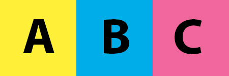

Image Rotator
Using the below image, make a rotator that shows only one of the lettered sections every 3 seconds.
For example, the first letter shown should be A, after 3 seconds, it should goto B and then C. After C it should go back to A, and every 3 seconds it should continue to cycle.

Rotator Here